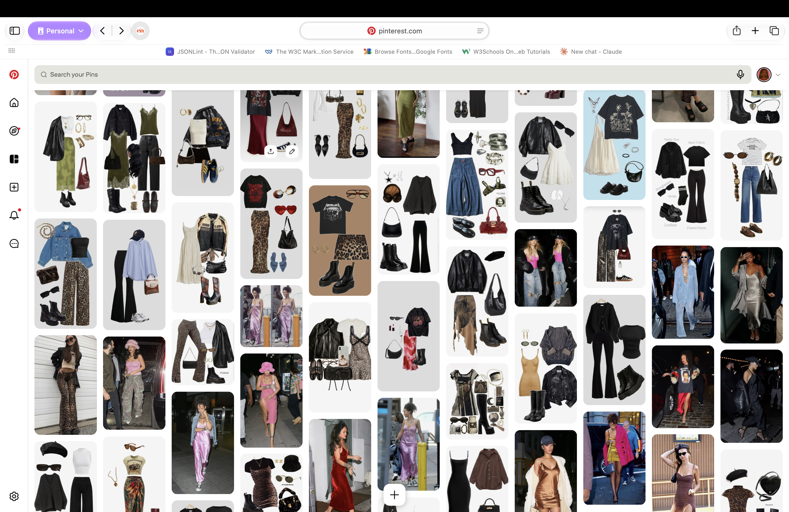
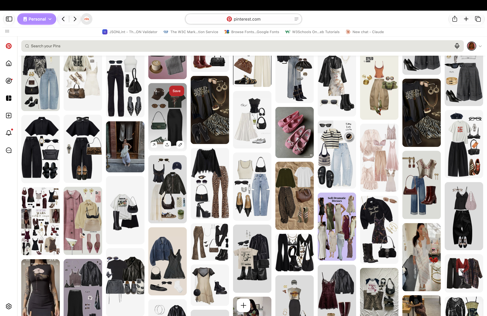
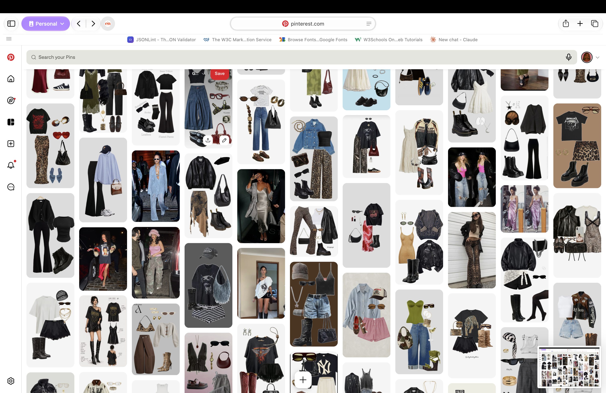
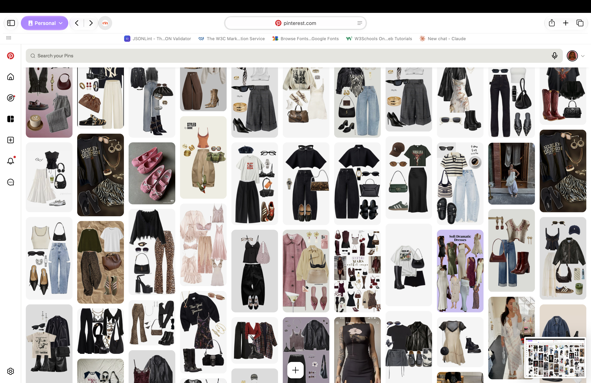

My Style
soft-grunge / rockstar-glam — leather + leopard + boots as the core language, slip dresses and denim as the vehicle, with occasional soft, romantic pieces to balance it out.
What I'm Learning
I am currently studying the history of fashion. I want to study more about luxury fashion, also I want to learn more about luxury fashion houses. I love the history of fashion and how it has evolved over time. I want to learn more about the different styles and how they have changed over time. I also want to learn more about the different designers and their impact on the fashion industry. My favorite is Chanel. I love the history of Chanel as well as the pieces. I know Chanel identifies with tweed, pearls, feminine tailoring, and the color black and white. I have a bachelor's degree in fashion merchandising and want to get back to learning and understanding life in the merchandiser, operations, and supply chain world. But I also still want to learn the creative side of the fashion industry. I want to learn more about the different styles and how they have changed over time. I also want to learn more about the different designers and their impact on the fashion industry.
Looks & Inspiration



